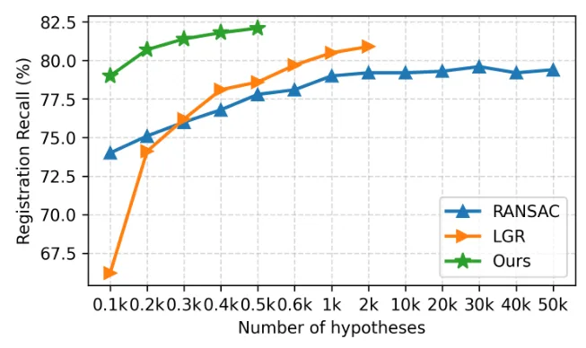
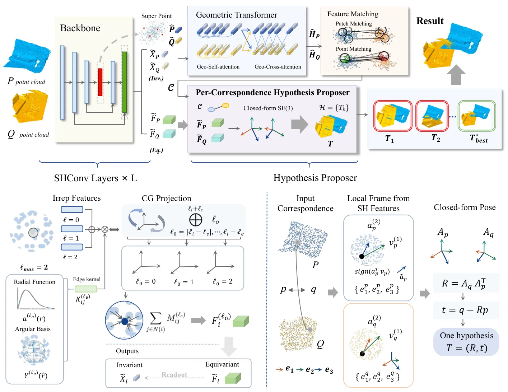

SHReg：基于球谐函数的严格旋转等变点云配准SHReg: Strictly Rotation-Equivariant Point Cloud Registration via Spherical Harmonics
直接命中点云配准的任意旋转鲁棒性，理论结构与 transformation hypothesis 设计清晰；数值等变误差、速度和真实 LiDAR 密度变化待论文实测确认。
一句话工作总结
联合学习严格 SO(3) 等变特征与旋转不变描述子，使对应点直接提出刚体变换并减少 RANSAC 采样。
摘要
SHReg 基于 SO(3) representation theory 构建严格 rotation-equivariant point cloud registration。方法用 SO(3) irreducible representations 表示局部几何特征，不依赖 local reference frames 或大量 rotation augmentation；球谐等变 backbone 联合学习用于 correspondence matching 的 rotation-invariant descriptors 和保留方向细节的 rotation-equivariant features。保留的等变结构使每个 correspondence 都能直接提出 rigid transformation，从而减少传统 RANSAC pipeline 的大规模 hypothesis sampling。摘要称其在 3DMatch、3DLoMatch 与 KITTI 上持续优于 SOTA，尤其能处理大幅旋转扰动。
Point cloud registration critically depends on local features that are both distinctive and robust to arbitrary 3D rotations. Existing learning-based methods typically approximate rotation invariance via fragile local reference frames or extensive data augmentation, providing only empirical invariance and often degrading under unseen rotational transformations. In this paper, we propose SHReg, a strictly rotation-equivariant point cloud registration framework grounded in the representation theory of $SO(3)$. By representing local geometric features as irreducible representations of $SO(3)$, SHReg guarantees exact equivariance under arbitrary rotations without relying on local reference frames. Built upon a spherical-harmonics-based equivariant backbone, SHReg jointly learns rotation-invariant descriptors for robust correspondence matching and rotation-equivariant features that preserve fine-grained orientation information. The preserved equivariant structure enables each correspondence to directly hypothesize a rigid transformation, reducing reliance on large-scale hypothesis sampling in conventional RANSAC-based pipelines and leading to improved robustness under challenging rotational variations. Extensive experiments on 3DMatch, 3DLoMatch, and KITTI demonstrate that SHReg consistently outperforms state-of-the-art methods in registration accuracy, particularly under large rotational perturbations.
中文解读摘录
- 作者：Chongjian Wang, Junjie Gao
- 价值判断：用 SO(3) irreducible representations 同时学习 invariant descriptors 与 equivariant orientation features，避免依赖脆弱 LRF 或仅靠 rotation augmentation 获得经验不变性。
- 结果与边界：每个 correspondence 可直接提出 rigid transform，减少传统 RANSAC 的大规模 hypothesis sampling；摘要称在 3DMatch、3DLoMatch、KITTI 尤其大旋转扰动下优于 SOTA。需检查 exact equivariance 的数值误差、吞吐、内存和真实 LiDAR 稀疏度变化。
- 链接：arXiv · PDF
图表/页面预览

{kind=link}

{kind=link}
